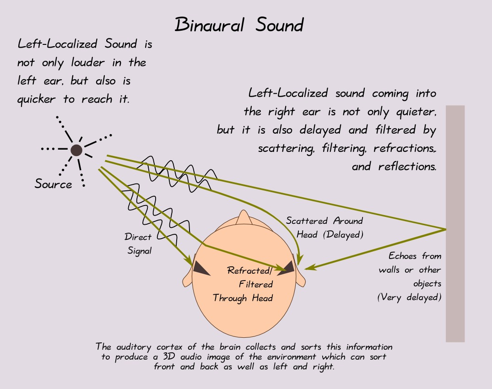
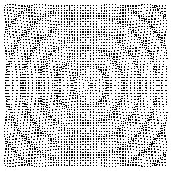

Paper accepted on "Personal sound zones: Delivering interface free audio to multiple listeners" for publication in IEEE Signal Processing Magazine.
Bio
A research fellow at Australian National University's
Research School of Engineering,
the Applied Signal Processing group.
Her research focuses broadly on innovative use and design of advanced
signal processing algorithms for spatial audio and sensor array
applications. Several areas of rencent work include: active noise
cancellation, source localization and separation, HRTF measurement and
modelling, virtual acoustics and surround sound systems.
News
-
2014.9
-
2014.7
Paper accepted on "Efficient multi-channel adaptive room compensation for spatial soundfield reproduction using a modal decomposition" for publication in IEEE/ACM Trans. Audio, Speech and Language Process (pdf).
-
2014.6
Papers accepted for presentation at EUSIPCO 2014 and IWAENC 2014.
-
2014.5
Paper accepted on "Three dimensional sound field reproduction using multiple circular loudspeaker arrays: Functional analysis guided approach" for publication in IEEE/ACM Trans. Audio, Speech and Language Process (pdf).
-
2014.1
Paper accepted on "Binaural sound source localization using the frequency diversity of the head-related transfer function" for publication in J. Acoust. Soc. Am. (pdf)
Academic Positions
-
Present 2012
Research Fellow
Australian National University, Research School of Engineering
-
2012 2010
OCE Postdoctoral Fellow
CSIRO Australia, Process Science and Engineering
Education & Training
-
Ph.D. 2010
Ph.D. in Electrical Engineering
Australian National University, Research School of Engineering
-
M.E.2005
Master of Engineering (Honors 1)
Australian National University
-
B.E.2003
Bachelor of Telecommunication Engineering
Xidian University, China
Honors, Awards and Grants
-
2014 - 2016Australian Research Council Discovery Project GrantActive Sound Control and Noise Reduction over Space: This project aims to address the critical issues for creating acoustic quiet zones in a noisy environment. It will provide novel signal processing theory for further development of active noise cancellation techniques over spatial regions. New technologies developed from this project are expected to underpin the future development of acoustic signal processing research and will have a broad range of applications such as reduction of noise inside cars, creation of individual quiet zones in passenger planes and mitigation of acoustic noise made by industrial plants to neighbouring suburbs. The outcomes from this proposal will also have economic importance as it can reduce the health risk posed to people working or living in noisy environments. (successful rate ~20%)
-
2013ANU ECR Travel Grant
 Presenting the paper: Wen Zhang, Thushara D. Abhayapala, and Filippo M. Fazi, "Functional analysis guided approach for sound field reproduction with flexible loudspeaker layouts", IEEE Workshop on Applications of Signal Processing to Audio and Acoustics (WASPAA), New Paltz, NY, USA, Oct. 2013.
Presenting the paper: Wen Zhang, Thushara D. Abhayapala, and Filippo M. Fazi, "Functional analysis guided approach for sound field reproduction with flexible loudspeaker layouts", IEEE Workshop on Applications of Signal Processing to Audio and Acoustics (WASPAA), New Paltz, NY, USA, Oct. 2013. -
2008ICASSP Student Travel GrantPresenting the paper: Wen Zhang, Rodney A. Kennedy, and Thushara D. Abhayapala, "Iterative extrapolation algorithm for data reconstruction over sphere", in Proc. IEEE International Conference on Acoustics, Speech, and Signal Processing (ICASSP), Las Vegas, USA, Apr. 2008, pp. 3733-3736.
Research Summary
One of the challenges in spatial audio is to capture and render the sound field over an extended region of space in challenging acoustic situations. Much of my work centers on signal processing problems and sensor array design related to sound capture and sound rendering.
Interests
- Active Noise Cancellation
- 3D Sound
- Acoustic Scene Analysis
- Binaural Source Separation and Localization
Research Projects
-

This is a discovery project funded by the Australian Research Concil (ARC) for 2014-2016. I am a Chief Investigator (CI) in the project together with Prof. Thushara Abhayapala and Prof. Walter Kellermann (University of Erlangen-Nuremberg, Germany).
This project aims to address the critical issues for creating acoustic quiet zones in a noisy environment. It will provide novel signal processing theory for further development of active noise cancellation techniques over spatial regions. New technologies developed from this project are expected to underpin the future development of acoustic signal processing research and will have a broad range of applications such as reduction of noise inside cars, creation of individual quiet zones in passenger planes and mitigation of acoustic noise made by industrial plants to neighbouring suburbs. The outcomes from this proposal will also have economic importance as it can reduce the health risk posed to people working or living in noisy environments.
-

How do we know where a sound comes from even in noise environments, such as at the cocktail party? We need to answner this question to develop directional processing in binaural (having or relating to two ears) hearing aids, teleconferencing techniques and robot localization systems. The question is at the heart of understanding the human auditory mechanism; what special features human have and how our brains process signals to localize sound sources. This project aims to develop new methods and technologies of binaural processing for source localization in complex acoustic environments based on these understandings.Priliminary results have been published in IEEE TASL 2013 and JASA 2014.
-

This is a discovery project funded by the Australian Research Concil (ARC) for 2011-2013. I am a research fellow working on the project under supervison of Prof. Thushara Abhayapala.
This project seeks to develop a systematic theory for synthesis and analysis of broadband signals defined over time and three dimensional space. My work focused on applying the functional analysis framework to to formulate the sound field reproduction problem in closed form, where analytical solutions are derived for a circular secondary source arrangement at a particular colatitude, from which circular arc layouts are investigated and the design of placing multiple loudspeaker arrays over the limited region of interest is proposed. My contributions are published in IEEE WASPAA 2013 and IEEE TASL 2014 . I am also working on a tutorial/survey article on the subject.
-

The ability of humans to perceive the spatial location of a sound is of great practical and research importance. The recent advances in computational power and acoustic measurement techniques have make the study of the HRTF a rapidly growing area with potential uses in virtual reality audio applications. This research focused on parsimonious representation of HRTFs and efficient and less cumbersome HRTF measurement techniques.
One of my major findings is that for the first time in literature, I provide the number of parameters needed to represent the head related transfer function. I also investigated practical aspects associated with HRTF measurement, i.e., the required angular resolution and the most suitable sampling scheme. The outcomes of this research have been published in journals IEEE TASL 2009, 2012, JASA 2010 and IEEE signal processing society major conferences including ICASSP 2008, ICASSP 2009.
Publications
Copyright and all rights therein are retained either by authors or by other copyright holders (such as the IEEE).
Filter by type:
Sort by year:
Efficient multi-channel adaptive room compensation for spatial soundfield reproduction using a modal decomposition
Journal PaperIEEE/ACM Trans. Audio, Speech, and Language Processing, vol. 22, no. 10, pp. 1522-1532, Oct. 2014.
Abstract
Mitigating the effects of reverberation is a significant challenge for real-world spatial soundfield reproduction, but the necessity of a large number of reproduction channels increases the complexity and presents several challenges to existing listening room compensation techniques. In this paper, we present an adaptive room compensation method to overcome the effects of reverberation within a region, using a model description of the reverberant soundfield. We propose the reverberant channel estimation and compensation be carried out in a single step using completely decoupled adaptive filters; thus, reducing the complexity of the overall process. We compare the soundfield reproduction performance with existing adaptive and nonadaptive room compensation methods through several simulation examples. The performance of the proposed method is comparable to existing techniques, and achieves a normalized wideband region reproduction error of 1% at a signal-to-noise ratio of 50 dB, within a 1 m radius region of interest using 60 loudspeakers and 55 microphones at frequencies below 1 kHz. Robust behavior of the room compensator is demonstrated down to direct-to-reverberant-path power ratios of -5 dB. Overall, the results suggest that the proposed method can diagonalize the room compensation system, leading to a more robust and parallel implementation for spatial soundfield reproduction.
Three dimensional sound field reprodudction using multiple circular loudspeaker arrays: Funcational analysis guided approach
Journal PaperIEEE/ACM Trans. Audio, Speech, and Language Processing, vol. 22, no. 7, pp. 1184-1194, July 2014.
Abstract
Three dimensional sound field reproduction based on higher order Ambisonics requires the placement of loudspeakers on a sphere that surrounds the target reproduction region. The deployment of a spherical array is not trivial especially for implementation in real rooms where the placement flexibility is highly desirable. This paper proposes a design ofmultiple circular loudspeaker arrays for reproducing three dimensional sound fields originating from a limited region of interest. We apply a functional analysis framework to formulate the sound field reproduction problem in a closed form. Secondary source distributions and target sound fields are modeled as two Hilbert spaces and mapped by an integral operator and its adjoint operator, from which a self-adjoint operator is constructed and the singular value decomposition is applied to represent source distributions and sound fields with two sets of interrelated singular functions.We derive the solutions for a circular secondary source arrangement and propose the design of placing multiple circular loudspeaker arrays only over the limited region of interest. Such a design allows for non-spherical and non-uniform loudspeaker placement and thus provides a flexible array arrangement. The reproduction accuracy of the proposed method is verified through numerical simulations.
Binaural sound source localization using the frequency diversity of the head-related transfer function
Journal PaperJ. Acoust. Soc. Am., vol. 135, no. 3, pp. 1207-1217, Mar. 2014.
Abstract
The spectral localization cues contained in the head-related transfer function are known to play a contributory a sound source and resolve the ambiguities in the vertical plane is demonstrated, and the impact of the are unable to fully exploit this diversity to accurately localize a sound source. The availability of broadband signal is described, and a composite estimator based on signal subspace decomposition is introduced. The localization performance is experimentally evaluated for single and multiple source just two measured signals complicates matters further, and results in front to back confusions and poor performance distinguishing between the source locations in a vertical plane. This study evaluates the performance of a source location estimator that retains the frequency domain diversity of the head related role in the sound source localization abilities of humans. However, existing localization techniques scenarios in the horizontal and vertical planes. The proposed estimator’s ability to successfully localize source location, knowledge of the source and the effect of reverberation is discussed.
Comparison of spherical harmonics based 3D-HRTF functional models
Conference PaperInternational Conference on Signal Processing and Communication Systems (ICSPCS), Gold Coast, Australia, Dec. 2013.
Abstract
The modeling performance of three models for the 3D Head Related Transfer Function (HRTF) are compared. One of these models appeared recently in the literature whilst the other two models are novel. All models belong to the class of functional models whereby the 3D-HRTF is expressed as an expansion in terms of basis functions, which are functions of azimuth, elevation, radial distance and frequency. The expansion coefficients capture the 3D-HRTF individualization. The models differ in the choice of basis functions and the degree of orthogonality that is possibly given the constraint that for each frequency the HRTF needs to satisfy the Helmholtz wave equation. One model introduced in this paper is designed to provide a functional representation that is orthonormal on a sphere at some nominal radius and approximately so around that nominal radius. This model is shown to be superior to the other two in being able to reconstruct most efficiently the 3D-HRTF derived from a spherical head 3D-HRTF model. For all cases we show that there is a unified technique to estimate expansion coefficients from measurements taken on a sphere of arbitrary radius.
Functional analysis guided approach for sound field reproduction with flexible loudspeaker layouts
Conference PaperIEEE Workshop on Applications of Signal Processing to Audio and Acoustics (WASPAA), New Paltz, NY, USA, Oct. 2013.
Abstract
This paper proposes a design of multiple circular and partial circular loudspeaker arrays for reproducing sound fields originated from a limited spatial region. We apply a functional analysis framework to formulate the sound field reproduction problem in closed form. Analytical solutions are derived for a circular secondary source arrangement, from which circular arc layouts are investigated and the design of placing multiple loudspeaker arrays over the limited region of interest is proposed. Such a design allows for non-spherical and non-uniform loudspeaker placement and thus provides flexibility to suit reproduction in real audio environments. The reproduction using the proposed method are illustrated by numerical simulations in comparison with the Least-squares based schemes.
Broadband DOA estimation using sensor arrays on complex-shaped rigid bodies
Journal PaperIEEE Trans. Audio, Speech, and Language Processing, vol. 21, no. 8, pp. 1573-1585, Aug. 2013.
Abstract
Sensor arrays mounted on complex-shaped rigid bodies are a common feature in many practical broadband direction of arrival (DOA) estimation applications.The scattering and reflections caused by these rigid bodies introduce complexity and diversity in the frequency domain of the channel transfer function, which presents several challenges to existing broadband DOA estimators. This paper presents a novel high resolution broadband DOA estimation technique based on signal subspace decomposition.We describe how broadband signals can be decomposed into narrow subband components, and combined such that the frequency domain diversity is retained. The DOA estimation performance is compared with existing techniques using a uniform circular array and a sensor array on a hypothetical rigid body. An improvement in closely spaced source resolution of up to 6 dB is observed for the sensor array on the hypothetical rigid body, in comparison to the uniform circular array. The results suggest that frequency domain diversity, introduced by complex-shaped rigid bodies, can provide higher resolution and clearer separation of closely spaced broadband sound sources.
Toward optimal functional representation of head-related transfer functions in the horizontal plane
Conference PaperInternational Congress on Acoustics (ICA), Montreal, Canada, June 2013. (invited paper)
Abstract
Head-related transfer function (HRTF) individualization using principle component analysis (PCA) modeling rely on the empirical data to reduce HRTF dimensionality for an optimal representation and to achieve HRTF personalization by tuning the model weights with the subject anthropometric parameters. However, for these representations, the basis is discrete and data dependent, which can limit its usefulness in universal HRTF representation. This paper studies the optimal functional representation of magnitude HRTF of 45 subjects for sound sources in the horizontal plane. We first use circular harmonics to extract the subject-independent HRTF angular dependence. The remaining spectral components of 45 subjects are then modeled by PCA and two standard functions, i.e., Fourier series and Fourier Bessel series. The metric to evaluate the model efficiency is the expansion weights cumulative variance. We identify that individual magnitude HRTFs over 20 kHz range could be modeled adequately well by a linear combination of only 19 Fourier series; this is a near optimal representation in comparison with the statistical PCA model. Further analysis of the model weights with subjective anthropometric measurements will provide a promising method for HRTF individualization, especially considering the nature of data independent continuous basis functions employed in the proposed functional representation.
Robustness analysis of room equalization for soundfield reproduction within a region
Conference PaperInternational Congress on Acoustics (ICA), Montreal, Canada, June 2013. (invited paper)
Abstract
Recent works on soundfield reproduction have presented several methods of recreating a desired soundfield within a region. Estimation or prior knowledge of the inverse reverberant channels now becomes an essential element of equalizing the room effects. However, it has been shown that designing point-to-point equalizers by sampling the reverberant soundfield is only practical within a few tenths of a wavelength of the sampled locations. This work investigates the robustness of the equalization process applied to a region, with respect to changing of actual microphone positions from their expected locations. We use a modal description of the equalized soundfield to obtain theoretical results for region equalization error due to positioning errors. Simulation results suggest that equalizing the reverberant soundfield recorded at multiple positions around the edge of the reproduction region is more immune to the positioning errors.
Active acoustic echo cancellation in spatial soundfield reproduction
Conference PaperIEEE International Conference on Acoustics, Speech, and Signal Processing (ICASSP), Vacouver, Canada, May 2013, pp. 620-624.
Abstract
The equalization of reverberation effects is essential for spatial soundfield reproduction, but estimation of the reverberant channel presents several challenges to existing equalization techniques. This paper presents a method of active acoustic echo cancellation (AEC) for soundfield reproduction applications, using a modal description of the reverberant soundfield. We describe how individual modes of the measured soundfield can be equalized adaptively, thus reducing the complexity of the channel estimation process. AEC and reproduction performance is compared with existing adaptive and non-adaptive equalization techniques through simulation examples. Equalization performance is comparable to existing methods, achieving a normalized region reproduction error of 1% and echo return loss enhancement of 15 - 30 dB at 50 dB SNR. The results suggest that the proposed model can be used to obtain a parallel implementation of a room equalizer for active AEC.
Characterization of acoustic emissions resulting from particle collision with a stationary bubble
Journal PaperJournal of the Acoustical Society of America, vol. 133, no. 5, pp. 2523-2527, May 2013.
Abstract
The present work characterizes the acoustic emissions resulting from the collision of a particle driven under gravity with a captive bubble. Conventional methods to investigate the bubble particle collision interaction model measure a descriptive parameter known as the collision time. During such a collision, particle impact may cause a strong deformation and a following oscillation of the bubble–particle interface generates detectable passive acoustic emissions (AE). Experiments and models presented show that the AE frequency monotonically decreases with the particle radius and is independent of the impact velocity, whereas the AE amplitude has a more complicated relationship with impact parameters.
An acoustic technique for measurement of bubble solids mass loading: (a) Fundamental study of single bubble
Journal PaperMinerals Engineering , vol. 36-38, pp. 45-52, Oct. 2012.
Abstract
This paper investigates a promising acoustic emission (AE) technique for estimating solids mass loading on pulp bubbles, with potential for on-line monitoring of attached solids in industrial flotation cells. It is observed that the coating of solids on a bubble surface results in a decrease in the fundamental (Minnaert) AE resonance frequency. Analytical models are derived to relate the resonance frequency of a loaded bubble to its size, attached solids mass loading and geometrical covering of particles. The AE resulting from induced pulsations of a solids loaded bubble is measured and linked with high-speed photographic recordings of the oscillations. These experiments have been performed for the attachment of a monolayer, multilayer and cluster of particles onto a gas bubble. The efficacy of the monitoring approach for these types of solids loading is demonstrated and a comparison is made of the sophistication of modelling necessary for adequate prediction of attached solids mass loading.
An acoustic technique for measurement of bubble solids mass loading: (b) Monitoring of Jameson Cell flotation performance by passive acoustic emissions
Journal PaperMinerals Engineering , vol. 36-38, pp. 21-30, Oct. 2012.
Abstract
A passive acoustic emission (AE) monitoring system has been developed and tested in Australian coal washeries. The system detects naturally occurring stress waves in the pulp and froth zones of a flotation unit, utilising volumetric (hydrophone) and surface (broadband accelerometer) sensing technologies. The analyser has been proof-of-concept trialled on a coal washery Jameson cell. AE signals associated with both hydrophones mounted near and accelerometers mounted on a downcomer are shown to be sensitive to cell process conditions including aeration, feed solids and reagent addition rates. Accelerometers mounted on a Jameson cell downcomer are shown to be particularly sensitive to aeration rate with AE signals containing features that can be interpreted in terms of Minnaert bubble resonance theory. The frequencies of peaks in the Fourier power spectra are in this case used to estimate dominant bubble size and solids loading inside the downcomer. Passive AE monitoring is a promising approach for flotation cell performance on-line monitoring.
On high resolution head-related transfer function measurements: An efficient sampling scheme
Journal PaperIEEE Trans. Audio, Speech, and Language Processing, vol. 20, no. 2, pp. 575-584, Feb. 2012.
Abstract
This paper deals with two important questions associated with HRTF measurement: 1) “what is the required angular resolution?,” and 2) “what is the most suitable sampling scheme?.” The paper shows that a well-defined finite number of spherical harmonics can capture the head-related transfer function (HRTF) spatial variations in sufficient detail, which is defined as the HRTF spatial dimensionality. For the 20-kHz audible frequency range, the value of the dimensionality means a high-directional resolution HRTF measurement is required. Considering such a high-resolution measurement, a number of sampling criteria have been identified from both mechanical setup and data processing aspects. Different sampling candidates are then compared to demonstrate that the best method which satisfies all requirements is the class termed as IGLOO. A fast spherical harmonic transform algorithm based on the IGLOO scheme is developed to accelerate the high-resolution data analysis. The proposed method is validated through simulation and experimental data acquired from a KEMAR mannequin.
Statistical method to identify key anthropometric parameters in HRTF individualization
Conference PaperJoint Workshop on Hands-free Speech Communication and Microphone Arrays (HSCMA'11), Edinburgh, UK, May 2011, pp. 213-218.
Abstract
This paper identifies the main anthropometric parameters which strongly influence the head-related transfer functions (HRTFs) in a direct physical way using statistical analysis on HRTF measured data. Principle component analysis is separately performed on the head-related impulse responses of all subjects at each direction for each ear to extract the individual information. Then the individual information, along with all anthropometric parameters, is introduced in the multiple linear regression analysis, where F statistic and t statistic are used to characterize the key parameters having strong direct physical effect on the HRTFs. Ultimately, combining with the results of the analysis of the inter-parameter correlations, only eight anthropometric parameters out of 27 are identified as the crucial elements in the role of spatial localization, which provides a guide for efficient HRTF individualization using key anthropometric parameters.
Internal structure identification of random process using principal component analysis
Conference PaperInternational Conference on Signal Processing and Communication Systems (ICSPCS), Gold Coast, Australia, Dec. 2010.
Abstract
Principal component analysis (PCA) is known to be a powerful linear technique for data set dimensionality reduction. This paper focuses on revealing the essence of PCA to interpret the data, which is to identify the internal structure of the random process from a large experimental data set. We give an explanation of the PCA procedure performed on a generated data set to demonstrate the exact meaning of the dimensionality reduction. Especially, a method is proposed to precisely determine the number of significant principal components for a random process. Then, the internal structure of the random process can be modeled by analyzing the relation between the PCA results and the original data set. This is vital in the efficient random process modeling, which is finally applied to an application in HRTF Modeling.
Insights into head-related transfer function: Spatial dimensionality and continuous representations
Journal PaperJournal of the Acoustical Society of America , vol. 127, no. 4, pp. 2347-57, Apr. 2010.
Abstract
This paper studies head-related transfer function (HRTF) sampling and synthesis in a three-dimensional auditory scene based on a general modal decomposition of the HRTF in all frequency-range-angle domains. The main finding is that the HRTF decomposition with the derived spatial basis function modes can be well approximated by a finite number, which is defined as the spatial dimensionality of the HRTF. The dimensionality determines the minimum number of parameters to represent the HRTF corresponding to all directions and also the required spatial resolution in HRTF measurement. The general model is further developed to a continuous HRTF representation, in which the normalized spatial modes can achieve HRTF near-field and far-field representations in one formulation. The remaining HRTF spectral components are compactly represented using a Fourier spherical Bessel series, where the aim is to generate the HRTF with much higher spectral resolution in fewer parameters from typical measurements, which usually have limited spectral resolution constrained by sampling conditions. A low-computation algorithm is developed to obtain the model coefficients from the existing measurements. The HRTF synthesis using the proposed model is validated by three sets of data: (i) synthetic HRTFs from the spherical head model, (ii) the MIT KEMAR (Knowles Electronics Mannequin for Acoustics Research) data, and (iii) 45-subject CIPIC HRTF measurements.
HRTF measurement on KEMAR manikin
Conference PaperACOUSTICS 2009 (Australian Acoustical Society), Adelaide, Australia, Nov. 2009.
Abstract
Presenting sounds to humans in virtual environments requires convolving the free field signals with a head related transfer function (HRTF), which is a frequency response describing the filtering effects of the pinna, head and torso of a human. Sets of HRTFs are usually measured on the dummy head or human subjects at different directions in an anechoic room. This paper describes the details of an experimental HRTF measurement procedure with emphasis on the design of the test signal and the post-processing to extract HRTFs. We construct a pre-emphasized logarithmic sweep as the excitation signal which separates the nonlinear and time variant distortions from the main desired response. For the received raw data, a series of signal processing techniques are applied to determine the timing offset when the head response begins, to mitigate room reverberation, and to equalize the HRTF measurements. One of the goals of this paper is to provide details of the experimental setup. Also, we intend to publish our processed measurements in the form of a HRTF data base as a resource for the acoustic community.
Modal expansion of HRTFs: Continuous representation in frequency-range-angle
Conference PaperIEEE International Conference on Acoustics, Speech, and Signal Processing (ICASSP), Taipei, Taiwan, Apr. 2009, pp. 285-288.
Abstract
This paper proposes a continuous HRTF representation in both 3D spatial and frequency domains. The method is based on the acoustic reciprocity principle and a modal expansion of the wave equation solution to represent the HRTF variations with different variables in separate basis functions. The derived spatial basis modes can achieve HRTF near-field and far-field representation in one formulation. The HRTF frequency components are expanded using Fourier Spherical Bessel series for compact representation. The proposed model can be used to reconstruct HRTFs at any arbitrary position in space and at any frequency point from a finite number of measurements. Analytical simulated and measured HRTFs from a KEMAR are used to validate the model.
Efficient continuous HRTF model using data independent basis functions: Experimentally guided approach
Journal PaperIEEE Trans. Audio, Speech, and Language Processing , vol. 17, no. 4, pp. 819-829, May 2009.
Abstract
This paper introduces a continuous functional model for head-related transfer functions (HRTFs) in the horizontal auditory scene. The approach uses a separable representation consisting of a Fourier-Bessel series expansion for the spectral components and a conventional Fourier series expansion for the spatial components. Being independent of the data, these two sets of basis functions remain unchanged for all subjects and measurement setups. Hence, the model can transform an individualized HRTF to a subject specific set of coefficients. A continuous functional model is also developed in the time domain. We show the efficient model performance in approximating experimental measurements by using the HRTF measurements from a KEMAR manikin and the synthetic data from the spherical head model. The statistical results are determined from a 50-subject HRTF data set. We also corroborate the predictive capability of the proposed model. The model has near optimal performance, which can be ascertained by comparison with the standard principle component analysis (PCA) and discrete Karhunen-Loeve expansion (KLE) methods at the measurement points and for a given number of parameters.
Spherical harmonic analysis and modellimited extrapolation on the sphere: Integral equation formulation
Conference PaperInternational Conference on Signal Processing and Communication Systems (ICSPCS), Gold Coast, Australia, Dec. 2008.
Abstract
The classical problem of extrapolation of a bandlimited signal from limited time domain data is revisited for signals defined on the sphere. That is, given limited or incomplete measurements of a low pass signal on the unit sphere, find the unique extrapolation to the complete unit sphere. Signals defined on the unit sphere arise in a number of applications, such as beam-patterns in azimuth and elevation and head related transfer functions. Our investigations explore the role of integral equation operators in characterizing the extrapolation problem which leads to an iterative algorithm analogous to that obtained in the time-frequency case.
Iterative extrapolation algorithm for data reconstruction over sphere
Conference PaperIEEE International Conference on Acoustics, Speech, and Signal Processing (ICASSP), Las Vegas, USA, Apr. 2008, pp. 3733-3736.
Abstract
Given limited or incomplete measurement data on a sphere, a new iterative algorithm is proposed on how to extrapolate signal over the whole sphere. The algorithm is based on a priori assumption that the Fourier decomposition of the signal on the sphere has finite degree of spherical harmonic coefficients, that is, the signal is mode limited. The algorithm is a simple iteration involving only the spherical harmonic decomposition. It is proven that the algorithm converges to the original signal over observation region and the convergence rate is lower bounded by the largest eigenvalue of an associated Fredholm integral equation.
Teaching
I have taught undergraduate/postgraduate courses and supervised HDR students in ANU since 2012.
Currrent Teaching & Students
-
Present 2013
Discrete Time Signal Processing (ENGN 4537/8537, Semester 1)
Co-lecture with Dr. S.M. Akramus Salehin, Dr. David Smith, Prof. Thushara Abhayapala
-
Present 2013
PhD Student: Hanchi Chen, Topic: Active Sound Control and Noise Cancellation
Co-supervised with Prof. Thushara Abhyapala
-
Present 2013
MPhil Student: Xiang Wu, Topic: Binaural Source Localization
Co-supervised with Mr. Dumidu Talagala
Teaching History & Former Students
-
2013 2013
Advanced Topics in Communication and Signal Processing (ENGN 8637, Semester 2)
Specialized in Audio and Speech Signal Processing, Course Coordinator
-
2013 2012
PhD Student: Dumidu S. Talagala
Co-supervised with Prof. Thushara Abhayapala
Contact & Meet Me
- office: 61 2 6125 1438
- wen.zhang@anu.edu.au
- au.linkedin.com/in/zhangwen
Prospective Students
For PhD/Mphil candidates: You should have a solid background in Electrical Engineering and Signal Processing. When contacting me include a copy of your academic transcript, resume, and topics of interest. Information about the college-wide application process and requirements can be found here and scholarship details can be found here.
For ANU students interested in Honors or independent study, please email me with your interest and track records to set up a conversation.